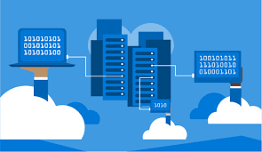

Implementación de Interfaces de Programación de Aplicaciones de Terceros (APIS)
Saber 2

En la actualidad, el desarrollo de aplicaciones digitales ha evolucionado gracias al uso de Interfaces de Programación de Aplicaciones (APIs), las cuales permiten la comunicación entre diferentes sistemas de software. La implementación de APIs de terceros se ha convertido en una práctica común, ya que facilita la integración de servicios externos sin necesidad de desarrollar todas las funcionalidades desde cero. Las APIs de terceros ofrecen soluciones ya existentes, como servicios de geolocalización, pagos en línea, autenticación de usuarios, redes sociales y plataformas de streaming. Al integrarlas en una aplicación, los desarrolladores pueden mejorar la funcionalidad, optimizar el tiempo de desarrollo y reducir costos, aprovechando tecnologías confiables y ampliamente utilizadas. Implementar correctamente una API de terceros implica comprender su documentación, métodos de autenticación, formatos de intercambio de datos y políticas de uso. Esta práctica no solo mejora la eficiencia del desarrollo de software, sino que también promueve la interoperabilidad entre plataformas y el crecimiento de ecosistemas digitales más completos y funcionales.
1. Geolocalización
La geolocalización es una tecnología que permite identificar la ubicación geográfica de un dispositivo o usuario en tiempo real. Funciona mediante sistemas como el GPS, redes móviles y conexiones Wi-Fi. Es ampliamente utilizada en aplicaciones de mapas, transporte, entregas y redes sociales.
- Ejemplos: Google Maps, Uber, Didi, aplicaciones de reparto.
- Ventajas: navegación precisa, servicios personalizados, mayor seguridad.
- Desventajas: consumo de batería, riesgos de privacidad.
2. Redes Sociales

Las redes sociales son plataformas digitales que permiten la comunicación, interacción y el intercambio de contenido entre personas y organizaciones. Se utilizan para socializar, informarse, aprender y promocionar productos o servicios.
- Ejemplos: Facebook, Instagram, TikTok, X, WhatsApp.
- Ventajas: comunicación inmediata, difusión de información, oportunidades laborales.
- Desventajas: adicción, desinformación, riesgos de seguridad.
3. Base de Datos
Una base de datos es un sistema que permite almacenar, organizar y gestionar grandes cantidades de información de forma eficiente y segura. Son esenciales en aplicaciones web, sistemas escolares, bancos y tiendas en línea.
- Ejemplos: MySQL, SQL Server, Oracle, MongoDB.
- Ventajas: organización de datos, acceso rápido, seguridad.
- Desventajas: costos de mantenimiento, necesidad de conocimientos técnicos.
4. Plataformas On-Line
Las plataformas en línea son entornos digitales accesibles por internet que permiten realizar diversas actividades como estudiar, trabajar, comunicarse o almacenar información en la nube.
- Ejemplos: Google Classroom, Moodle, Zoom, Google Drive.
- Ventajas: acceso remoto, colaboración en tiempo real, flexibilidad.
- Desventajas: dependencia de internet, problemas de seguridad.
5. Plataformas Streaming
Las plataformas de streaming permiten la reproducción de contenido multimedia (video o audio) en tiempo real sin necesidad de descargarlo. Se utilizan principalmente para entretenimiento, educación y transmisión en vivo.
- Ejemplos: Netflix, Spotify, YouTube, Twitch.
- Ventajas: acceso inmediato al contenido, variedad, comodidad.
- Desventajas: consumo de datos, suscripciones de pago.
6. Conclusión
Estas tecnologías forman parte fundamental de la vida digital actual, ya que facilitan la comunicación, el acceso a la información y el desarrollo de aplicaciones modernas, impactando tanto en el ámbito personal como profesional.